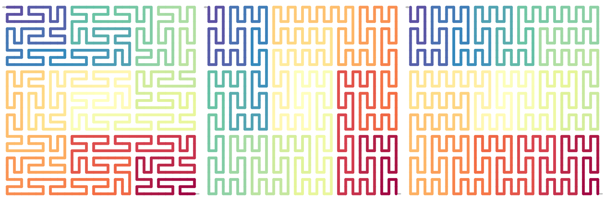

Unit flipping
Zuguang Gu (z.gu@dkfz.de)
2024-07-25
Source:vignettes/unit_flipping.Rmd
unit_flipping.RmdGeneral Peano curve
For the curve on level \(k\), the subunits, higher levels can be randomly flippped, while only make sure all the level-1 subunit are vertical.
p can be a level-\(k\) curve with subunits on any level flipped.
p = sfc_peano("I", rot = 90, level = 3)
p2 = sfc_flip_unit(p, c("", "7")) |>
change_level1_unit_orientation(to = "vertical")
p3 = sfc_flip_unit(p, as.character(1:9)) |>
change_level1_unit_orientation(to = "vertical")
draw_multiple_curves(p, p2, p3,
nrow = 1, title = FALSE)
We can also do from \(k-1\) level, i.e. generate an curve on \(k-1\) of any form, extend it to level \(k\) and adjust all level-1 units to vertical.
p2 = sfc_peano("I", level = 2)
sfc_expand(p2) |> # expand from level 2 to level 3
change_level1_unit_orientation(to = "vertical") |>
plot()Other structures
By manually flipping the units on various level, we can generate more patterns. For example, in the following 9 blocks, we let the even blocks to be all vertical and odd blocks to be all horizontal. Here the self-defined function can accepts a second argument which is the index of the current unit.
p = sfc_peano("I", level = 3)
p2 = change_level1_unit_orientation(p, to = "vertical")
p3 = sfc_apply(p2, 1, function(x, i) {
if(i %% 2 == 1) {
sfc_flip_unit(x)
} else {
x
}
})
p4 = sfc_apply(p2, 2, function(x, i) {
if(i %% 9 %in% 4:6) {
sfc_flip_unit(x, to = "horizontal")
} else {
x
}
})
draw_multiple_curves(
p, p3, p4, nrow = 1)